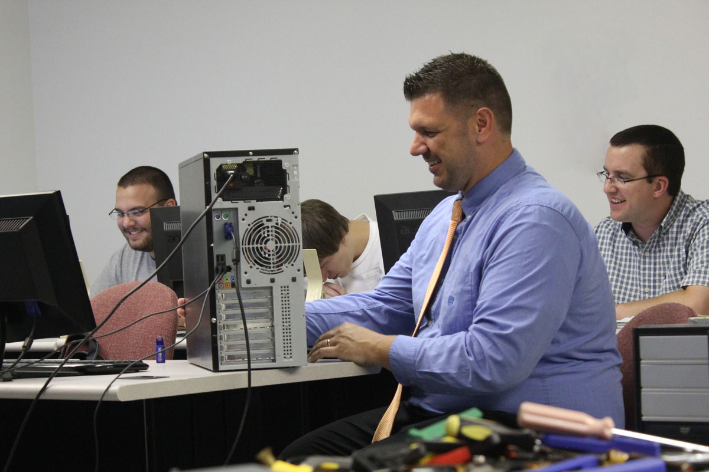
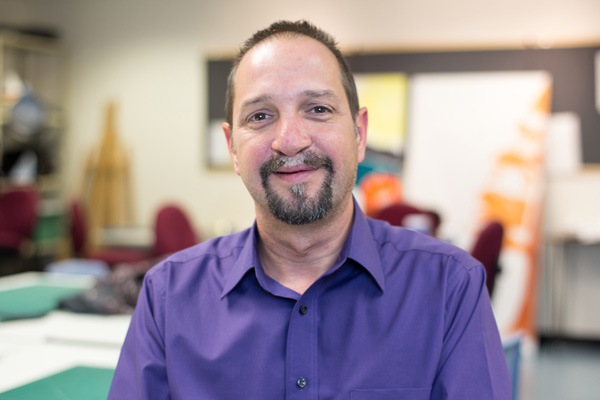

Two-Year Associate in Specialized Technology (AST) Degree Program
The rapid pace and evolution of today’s technology puts skilled information technology professionals in demand to meet the needs of our ever-changing technology-driven world. The South Hills Information Technology program is built upon a hands-on, project-driven approach, giving you the skills you need for a lifelong career in this rewarding career path. Our IT students learn software and hardware inside and out. As part of the program, you will hone skills in developing web sites, mobile apps, networking, security, database administration, programming and troubleshooting.
Students also learn project management skills, operating systems on all platforms, and E-commerce. Within our comprehensive field of study for the program, students may choose technical electives for concentrated focus on programming, networking, or web development—with the flexibility to customize their class choices based on their desired career choice.
South Hills IT grads are working in careers including Computer Support Specialist, Network Administrator, Security Analyst, Applications Developer or Programmer, Webmaster, E-Commerce Specialist, Network Systems and Data Communications Analyst and Database Administrator.
Successful students in this program will be fast learners, willing to explore and try new things with the computer, and not easily distracted by online temptations such as games and social media. For those focusing on programming, strong math comprehension skills are an asset.

Ray Liddick Jr.
Full-time Instructor
David Whitmarsh
Full-time Instructor